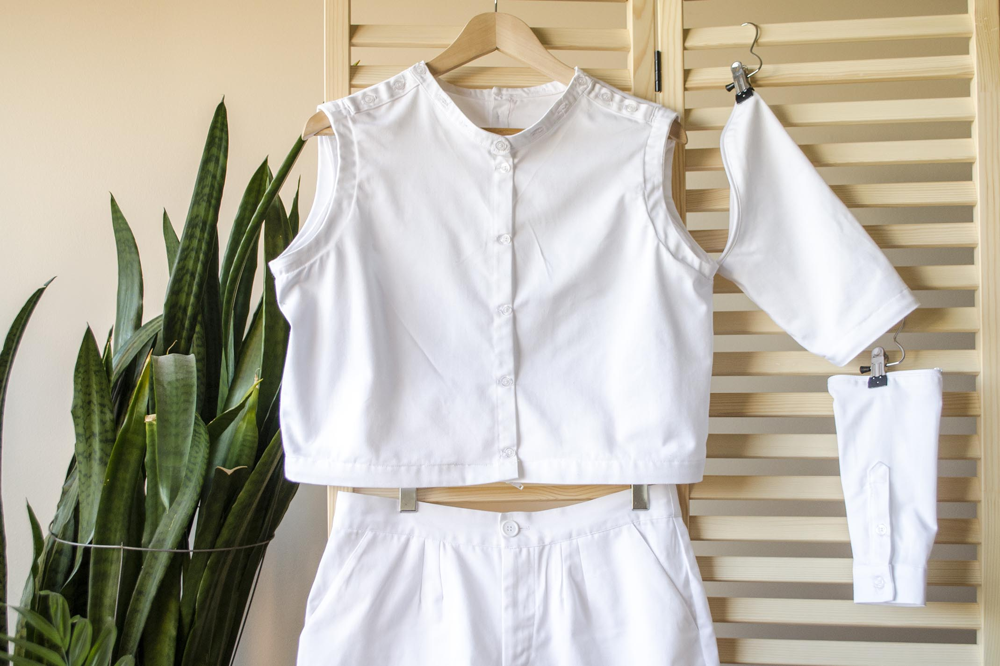
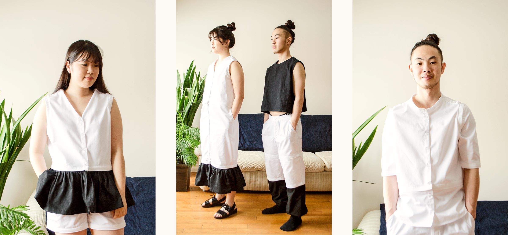
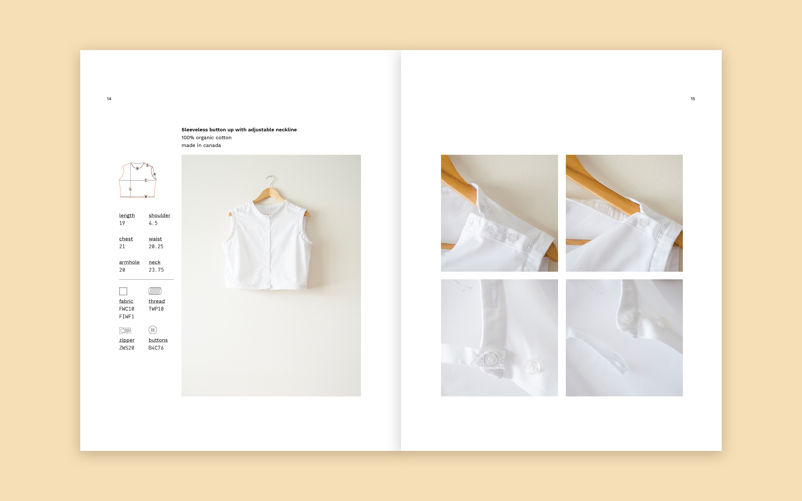
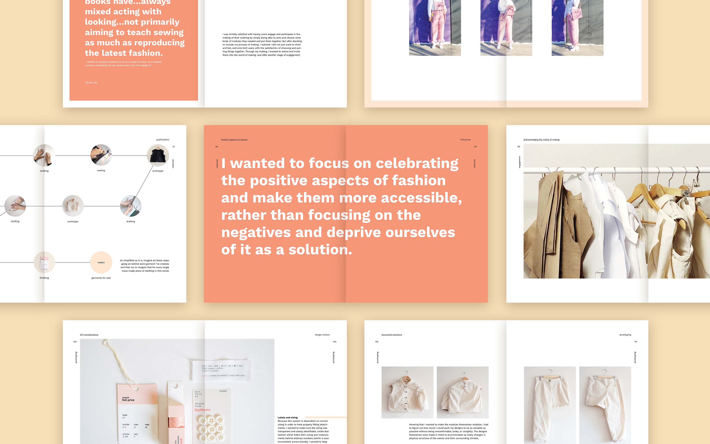
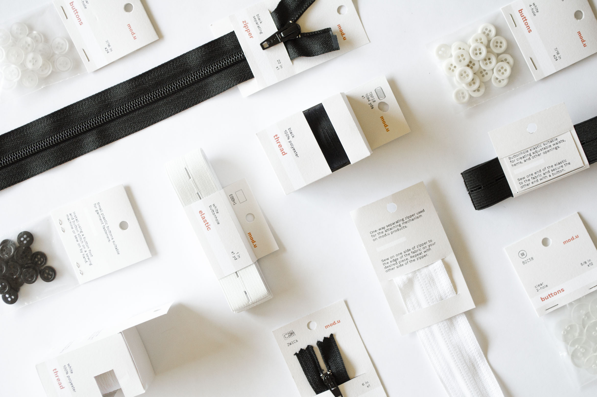
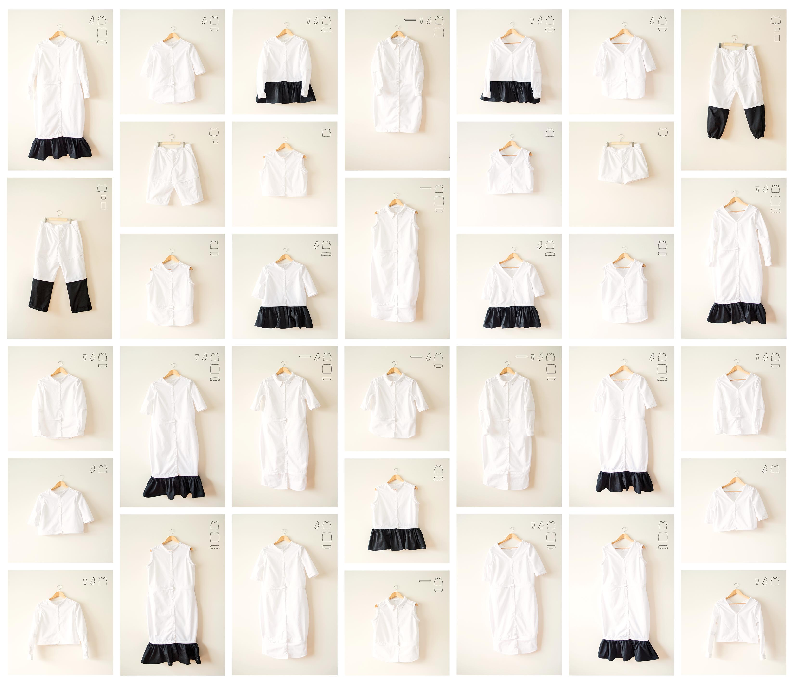

mod.u
mod.u is a clothing system and philosophy that explores the possibility of a modular clothing system as an alternative to fast fashion. Consisting of modules that can be mixed and matched to the wearer’s unique size, shape, and style, mod.u explores the possibility of clothing that can be adapted to the wearer’s needs.







Other Projects